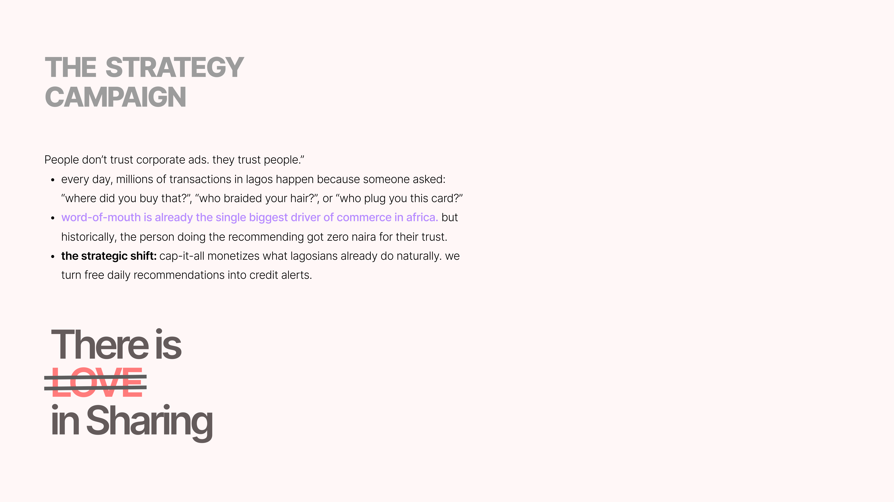
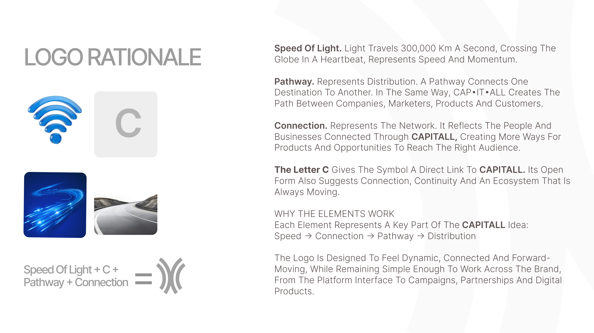
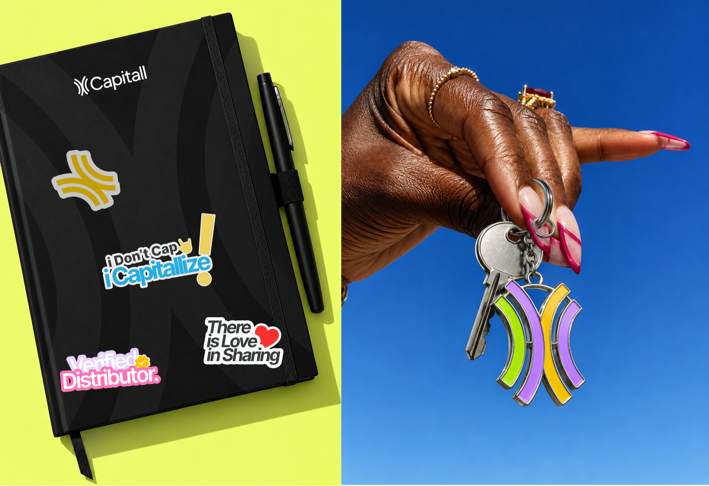
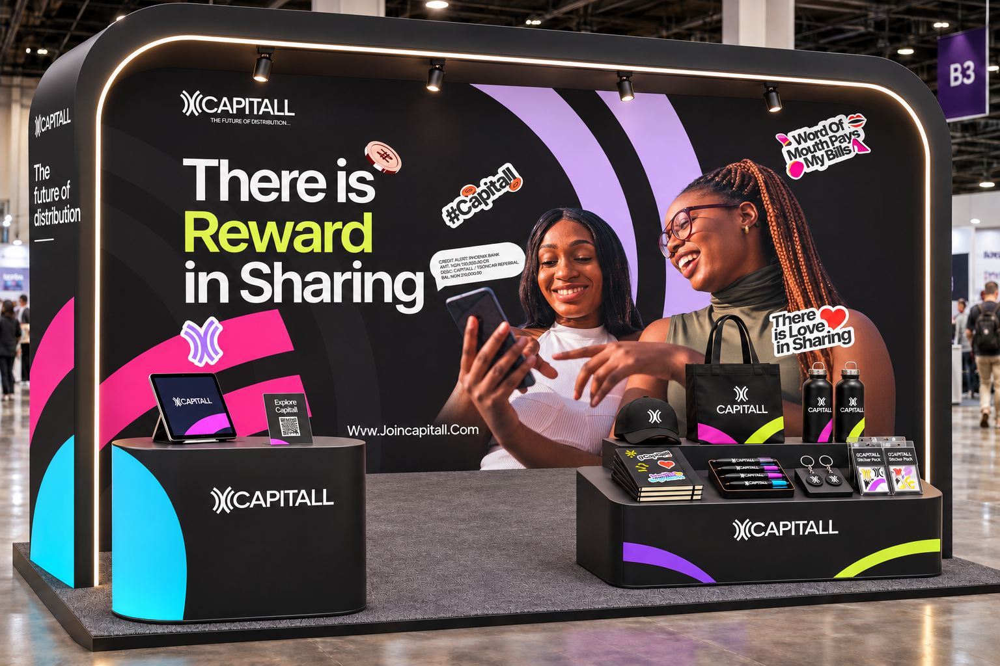
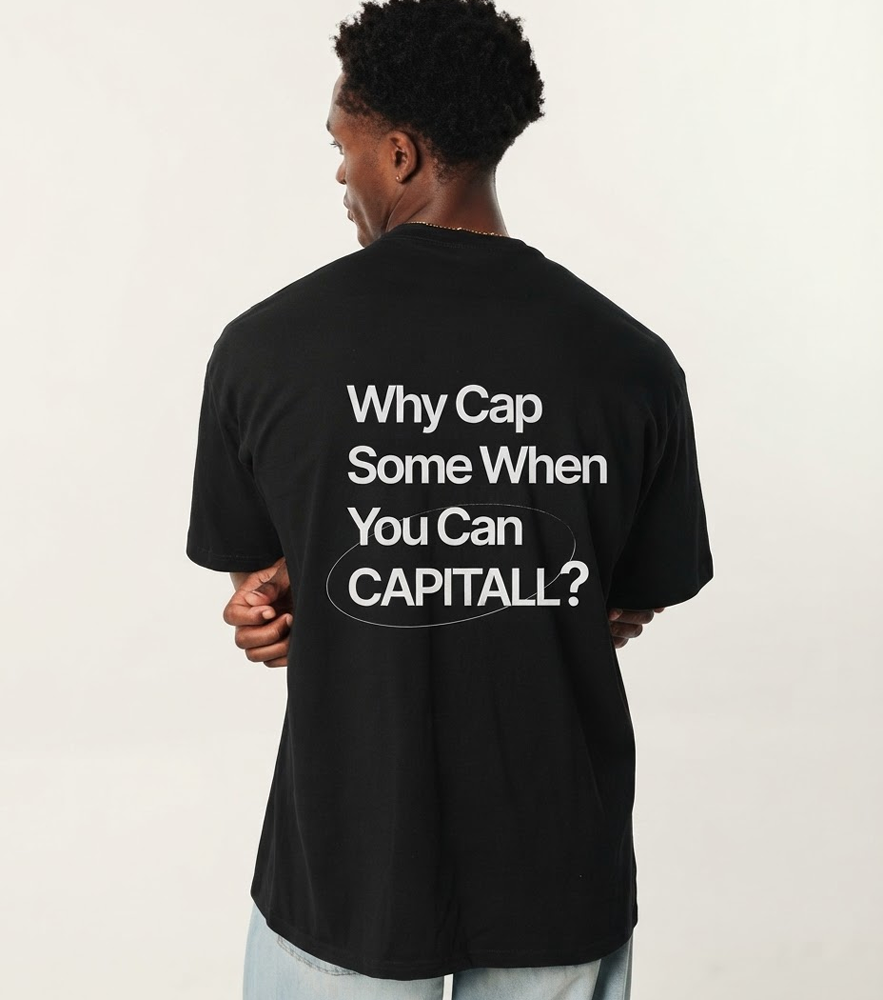

What if your money app felt a little less like banking, and a lot more like real life?
Across emerging African markets, informal recommendations drive over 80% of retail transactions—yet the individuals driving that volume receive zero attribution. Capitall reimagines this grassroots dynamic by giving everyday people the tools to earn commissions through simple digital links and physical NFC cards.
The Challenge
The dilemma wasn't lack of demand. It was the friction of traditional capital.
Traditional distribution in Africa requires heavy startup capital: purchasing bulk inventory, renting warehouse or retail space, and bearing 100% of the unsold stock risk. This reality excludes millions of ambitious young people from participating in the retail value chain.
Meanwhile, consumer brands struggle with hyper-local awareness and last-mile consumer trust. The dilemma wasn't that people didn't want to sell or buy—it was that the economic bridge between brands and everyday distributors was broken.


The Idea
“There is Reward in Sharing” — Turning cultural habit into economic fuel.
In West Africa, the idiom “There is Love in Sharing” is woven into everyday language. People recommend delicious meals, reliable mechanics, and great products freely. We elevated this instinct into an empowering commercial premise: There is Reward in Sharing.
By establishing “You Don’t Need Capital To Earn On CAPITALL”, we eliminated the psychological intimidation of starting a business. You don't need inventory or warehousing; your existing community and social capital are all the leverage you need.

The Engine
Phygital distribution: digital attribution meets physical street-level tap.
African commerce doesn't happen strictly inside a mobile browser. It lives across markets, university hostels, campus cafeterias, and neighborhood corners. A purely digital platform would miss 70% of real-world interactions.
We designed an integrated phygital pipeline: Brands List products; Micro-distributors Join with zero upfront fees; they Share via personalized web links or by physically tapping NFC smart cards against customers' smartphones; the network Verifies the conversion; and commissions are instantly Rewarded to digital wallets.


Visual Identity
Designed for the street, refined for institutional capital.
The visual identity needed to communicate across extreme contexts: from roadside posters under the Lagos sun to investment presentations in London. We anchored the brand in electric lilac, luminous chalk white, and deep carbon black.
The mark fuses bidirectional exchange arrows with upward compounding velocity curves, representing the reciprocal growth between brands and their community distributors.
